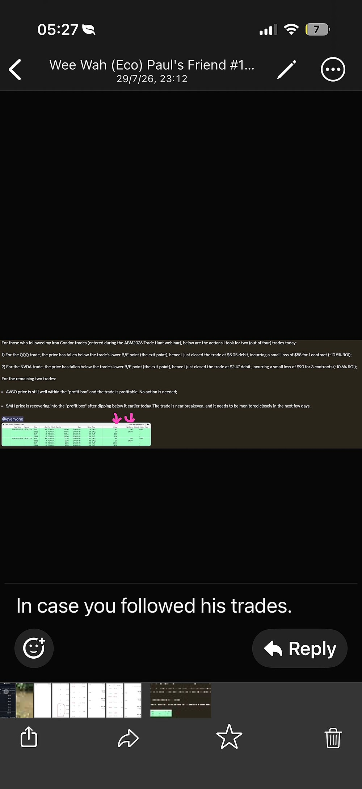

| Year年份 | Positions持仓 | Unrealized P&L未实现盈亏 |
|---|---|---|
| 2024 | FDS, POOL, ZTS (stocks)FDS、POOL、ZTS（股票） | −$21,488.15 |
| 2025 | — (all 2025 trades since closed)—（2025年交易均已平仓） | $0.00 |
| 2026 | AVGO, IWM (2 open Iron Condors) + GOOGL + FDS Covered Call — NVDA, SMH (Jul) and SPY now closedAVGO、IWM（2个未平仓铁鹰）+ GOOGL + FDS备兑看涨——NVDA、SMH（7月）与SPY现已平仓 | +$347.28 |
| Total合计 | −$21,140.87* | |
| Position持仓 | Qty数量 | Unrealized P&L未实现盈亏 | Fee to IBKRIBKR手续费 | Net P&L净盈亏 |
|---|---|---|---|---|
| NVDA | 1 | +$14 | $4 | +$10 |
| QQQ | 2 | +$11 | $4 | +$7 |
| AVGO | 1 | +$8 | $4 | +$4 |
| SMH | 1 | −$25 | $4 | −$29 |
| Total总计 | 5 | +$8 | $16 | −$8 |
| Action操作 | Leg腿 | Fill成交 | Amount金额 | Δ DeltaΔ Delta | Price平仓价 | Net Price净价 |
|---|---|---|---|---|---|---|
| SELL | 195 Put | $5.06 | +$506 | −0.33 | $8.89 | $2.47 DEBIT借记 |
| BUY | 190 Put | $3.75 | −$375 | −0.25 | $6.54 | |
| SELL | 230 Call | $3.21 | +$321 | +0.21 | $0.43 | |
| BUY | 235 Call | $2.37 | −$237 | +0.17 | $0.31 |
positions.json — treat as an estimate, not a live IBKR reading. Convention per T30: put deltas negative, call deltas positive. Net Price $2.47 DEBIT is from a shared trade-close alert (29 Jul 2026, 23:12 SGT) for the same strikes/expiry — 3 contracts closed, ≈$90 loss. Reference only; doesn't change the OPEN status/Unrealized P&L above unless Paul confirms this position was actually closed.
Delta 由建仓权利金反推隐含波动率（Black-Scholes模型）建模得出，因positions.json未记录每条腿的真实delta/IV——请视为估算值，非IBKR实时读数。符号约定见T30：认沽delta为负，认购delta为正。净价$2.47借记取自一则分享的平仓提醒（2026年7月29日23:12新加坡时间），行权价/到期日相同——3口合约平仓，约亏$90。仅供参考；除非Paul确认此仓位确实已平仓，否则不改变上方的OPEN状态或未实现盈亏。
| Action操作 | Leg腿 | Fill成交 | Amount金额 | Δ DeltaΔ Delta | Price平仓价 | Net Price净价 |
|---|---|---|---|---|---|---|
| SELL | 680 Put | $11.72 | +$1,172 | −0.34 | $23.44 | $5.05 DEBIT借记 |
| BUY | 675 Put | $10.62 | −$1,062 | −0.31 | — | |
| SELL | 745 Call | $8.91 | +$891 | +0.25 | $0.40 | |
| BUY | 750 Call | $7.42 | −$742 | +0.22 | — |
positions.json — treat as an estimate, not a live IBKR reading. Convention per T30: put deltas negative, call deltas positive. Price and Net Price $5.05 DEBIT are from the same 29 Jul 2026 23:12 SGT shared trade-close alert as Table 11 — short strikes match this condor exactly (745 Call / 680 Put, so their Price is real), but the alert's long legs are 755 Call / 670 Put ($10-wide wings) vs this table's 750 Call / 675 Put ($5-wide wings), so those two Price cells are left blank (—) rather than guessed. Net Price is therefore a reference/approximate close cost for the whole combo, not a confirmed fill for these exact legs — swap in the real figures if Paul has the actual closing prices for the 750C/675P wings.
Delta 由建仓权利金反推隐含波动率（Black-Scholes模型）建模得出，因positions.json未记录每条腿的真实delta/IV——请视为估算值，非IBKR实时读数。符号约定见T30：认沽delta为负，认购delta为正。平仓价与净价$5.05借记取自与表11相同的分享平仓提醒（2026年7月29日23:12新加坡时间）——卖出行权价与本铁鹰完全相同（745 Call / 680 Put，故其平仓价为真实数据），但该提醒的买入腿为755 Call / 670 Put（$10宽价差），而本表为750 Call / 675 Put（$5宽价差），因此这两格平仓价留空（—），不做猜测。净价因此是整组的参考/近似平仓成本，非本组具体腿的确认成交价——若Paul有750C/675P这组的实际平仓价，请替换。
| Action操作 | Leg腿 | Fill成交 | Amount金额 | Δ DeltaΔ Delta | Price平仓价 | Net Price净价 |
|---|---|---|---|---|---|---|
| SELL | 350 Put | $12.41 | +$1,241 | −0.31 | — | — Still open仍持仓 |
| BUY | 340 Put | $9.50 | −$950 | −0.25 | — | |
| SELL | 430 Call | $10.11 | +$1,011 | +0.26 | — | |
| BUY | 440 Call | $8.27 | −$827 | +0.22 | — |
positions.json — treat as an estimate, not a live IBKR reading. Convention per T30: put deltas negative, call deltas positive. Net Price is blank — the same 29 Jul 2026 23:12 SGT alert that closed NVDA/QQQ says AVGO is still well within the profit box and profitable, no action taken.
Delta 由建仓权利金反推隐含波动率（Black-Scholes模型）建模得出，因positions.json未记录每条腿的真实delta/IV——请视为估算值，非IBKR实时读数。符号约定见T30：认沽delta为负，认购delta为正。净价暂空——与平仓NVDA/QQQ的同一则提醒（2026年7月29日23:12新加坡时间）指出AVGO仍稳居盈利区间且获利中，未采取行动。
| Action操作 | Leg腿 | Fill成交 | Amount金额 | Δ DeltaΔ Delta | Price平仓价 | Net Price净价 |
|---|---|---|---|---|---|---|
| SELL | 510 Put | $17.95 | +$1,795 | −0.29 | — | — Still open仍持仓 |
| BUY | 500 Put | $15.45 | −$1,545 | −0.25 | — | |
| SELL | 620 Call | $21.47 | +$2,147 | +0.32 | — | |
| BUY | 630 Call | $18.57 | −$1,857 | +0.29 | — |
IB11.html). Delta is modeled from the entry premium (Black-Scholes, back-solved implied vol against a ~$552.45 reference price — real per-leg delta/IV isn't logged in positions.json) — treat as an estimate, not a live IBKR reading. Convention per T30: put deltas negative, call deltas positive. Net Price is blank — position is still open, no close yet.
已于2026年8月4日22:35:13新加坡时间重新建仓——真实成交（取代此前已于2026年7月29日平仓、亏损−$76.19的Aug21'26 515/650铁鹰，记录于IB11.html）。Delta 由建仓权利金反推隐含波动率（Black-Scholes模型，参考股价约$552.45）建模得出，因positions.json未记录每条腿的真实delta/IV——请视为估算值，非IBKR实时读数。符号约定见T30：认沽delta为负，认购delta为正。净价暂空——仍持仓中，尚未平仓。
| Action操作 | Leg腿 | Fill成交 | Amount金额 | Δ DeltaΔ Delta | Price平仓价 | Net Price净价 |
|---|---|---|---|---|---|---|
| SELL | 715 Put | $5.80 | +$580 | −0.22 | — | — No close data无平仓数据 |
| BUY | 705 Put | $4.56 | −$456 | −0.17 | — | |
| SELL | 770 Call | $4.47 | +$447 | +0.25 | — | |
| BUY | 780 Call | $2.15 | −$215 | +0.15 | — |
positions.json — treat as an estimate, not a live IBKR reading. Convention per T30: put deltas negative, call deltas positive. Net Price is blank — SPY isn't covered by the 29 Jul 2026 23:12 SGT close alert (that alert only tracked NVDA/QQQ/AVGO/SMH).
Delta 由建仓权利金反推隐含波动率（Black-Scholes模型）建模得出，因positions.json未记录每条腿的真实delta/IV——请视为估算值，非IBKR实时读数。符号约定见T30：认沽delta为负，认购delta为正。净价暂空——2026年7月29日23:12新加坡时间的平仓提醒未涵盖SPY（该提醒仅追踪NVDA/QQQ/AVGO/SMH）。
| Action操作 | Leg腿 | Fill成交 | Amount金额 | Δ DeltaΔ Delta | Price平仓价 | Net Price净价 |
|---|---|---|---|---|---|---|
| SELL | 282 Put | $4.03 | +$403 | −0.23 | — | — No close data无平仓数据 |
| BUY | 277 Put | $3.00 | −$300 | −0.18 | — | |
| SELL | 305 Call | $2.34 | +$234 | +0.21 | — | |
| BUY | 310 Call | $1.23 | −$123 | +0.14 | — |
positions.json — treat as an estimate, not a live IBKR reading. Convention per T30: put deltas negative, call deltas positive. Net Price is blank — IWM isn't covered by the 29 Jul 2026 23:12 SGT close alert (that alert only tracked NVDA/QQQ/AVGO/SMH).
Delta 由建仓权利金反推隐含波动率（Black-Scholes模型）建模得出，因positions.json未记录每条腿的真实delta/IV——请视为估算值，非IBKR实时读数。符号约定见T30：认沽delta为负，认购delta为正。净价暂空——2026年7月29日23:12新加坡时间的平仓提醒未涵盖IWM（该提醒仅追踪NVDA/QQQ/AVGO/SMH）。
| Action操作 | Leg腿 | Target Fill目标价 | Amount金额 | Price平仓价 | Net Price净价 |
|---|---|---|---|---|---|
| SELL | 54 Put | $0.475 | +$47.50 | — | — No close data无平仓数据 |
| BUY | 52 Put | $0.275 | −$27.50 | — | |
| SELL | 63 Call | $0.875 | +$87.50 | — | |
| BUY | 65 Call | $0.425 | −$42.50 | — |
| Position持仓 | Cost Basis (B)成本 (B) | Share Price (A)股价 (A) | Value (A×100)现值 (A×100) | Unrealized P&L (Value−B)未实现盈亏 (现值−B) |
|---|---|---|---|---|
| FDS | $34,324.00 | — | $26,968.00 | −$7,356.00 (−21.4%) |
| POOL | $27,839.88 | — | $19,558.00 | −$8,281.88 (−29.8%) |
| ZTS | $13,560.27 | — | $7,710.00 | −$5,850.27 (−43.1%) |
| Options (3 IC + GOOGL + FDS Covered Call)期权（3个铁鹰 + GOOGL + FDS备兑看涨） | −$1,686.65 | — | −$1,327.91 | +$358.74 |
| Total合计 | $74,037.50 | — | $52,908.09 | −$21,129.41* |
| Symbol代码 | Shares股数 | Avg Cost平均成本 | Now现价 | P&L %盈亏% | Covered Call备兑看涨 | Earnings Date财报日期 |
|---|---|---|---|---|---|---|
| Loading share prices…股价加载中… | ||||||
| ## | Action动作 | Qty数量 | Expiry到期日 | Strike行权价 | Type类型 | Multiplier乘数 |
|---|---|---|---|---|---|---|
| 1 | Sell | 1 | Aug28'26 | 54 | Put认沽 | 100 |
| 2 | Buy | 1 | Aug28'26 | 52 | Put认沽 | 100 |
| 3 | Sell | 1 | Aug28'26 | 63 | Call认购 | 100 |
| 4 | Buy | 1 | Aug28'26 | 65 | Call认购 | 100 |
| Symbol代码 | Type类型 | Role角色 | IC Expiry (D)铁鹰到期（D） | Next Earnings (E)下次财报（E） | Gap E−D差距 E−D | Earnings Risk财报风险 |
|---|---|---|---|---|---|---|
| NVDA Nvidia Corporation ✅ |
Stock个股 | Open IC已开仓铁鹰 | Aug 21 '26 | 26 Aug 2026 (after close)（盘后） | +5 days天 | ✅ Safe安全 |
| QQQ Invesco QQQ Trust ➖ |
ETFETF | Open IC已开仓铁鹰 | Aug 28 '26 | — no single-company earnings risk (ETF)——ETF，无单一公司财报风险 | ➖ N/A不适用 | |
| AVGO Broadcom Inc. ✅ |
Stock个股 | Open IC已开仓铁鹰 | Aug 28 '26 | 3 Sep 2026 (after close)（盘后） | +6 days天 | ✅ Safe安全 |
| SMH VanEck Semiconductor ETF ➖ |
ETFETF | Open IC已开仓铁鹰 | Aug 21 '26 | — no single-company earnings risk (ETF)——ETF，无单一公司财报风险 | ➖ N/A不适用 | |
| SPY SPDR S&P 500 ETF Trust ➖ |
ETFETF | Open IC已开仓铁鹰 | Aug 31 '26 | — no single-company earnings risk (ETF)——ETF，无单一公司财报风险 | ➖ N/A不适用 | |
| IWM iShares Russell 2000 ETF ➖ |
ETFETF | Open IC已开仓铁鹰 | Aug 28 '26 | — no single-company earnings risk (ETF)——ETF，无单一公司财报风险 | ➖ N/A不适用 | |
| XLE Energy Select Sector SPDR Fund ➖ |
ETFETF | Target — pending fill目标——待成交 | Aug 28 '26 | — no single-company earnings risk (ETF; watch OPEC/energy news instead)——ETF，无单一公司财报风险（改留意OPEC/能源类新闻） | ➖ N/A不适用 | |
| MSFT Microsoft Corporation ⛔ |
Stock个股 | Considered — NOT entered已考虑——未建仓 | — (no position)——（尚无持仓） | 29 Jul 2026 (after close)（盘后） | 6 days from 23 Jul距7月23日6天 | ⛔ Risk风险 |
| AAPL Apple Inc. ⛔ |
Stock个股 | T39 diversification candidate — NOT enteredT39分散化候选——未建仓 | — (no position)——（尚无持仓） | 30 Jul 2026 (after close)（盘后） | 7 days from 23 Jul距7月23日7天 | ⛔ Risk风险 |
| POOL Pool Corporation ✅ |
Stock个股 | Held (100 shares) — potential IC candidate持仓中（100股）——潜在铁鹰候选 | — (no IC position; covered calls only so far)——（尚无铁鹰持仓，目前仅做备兑看涨） | 22 Oct 2026 (Q3'26, per Q2 earnings-call guidance — release-day timing not yet confirmed)（2026年第三季度，据第二季度财报电话会披露——当日盘前/盘后尚未确认） | 13+ weeks out from today (30 Jul)距今（7月30日）13周以上 | ✅ Safe安全 |
| XLF Financial Select Sector SPDR Fund ➖ |
ETFETF | T39 diversification candidate — NOT enteredT39分散化候选——未建仓 | — (no position)——（尚无持仓） | — no single-company earnings risk (ETF)——ETF，无单一公司财报风险 | ➖ N/A不适用 | |
| DIA SPDR Dow Jones Industrial Average ETF ➖ |
ETFETF | T39 diversification candidate — NOT enteredT39分散化候选——未建仓 | — (no position)——（尚无持仓） | — no single-company earnings risk (ETF)——ETF，无单一公司财报风险 | ➖ N/A不适用 | |
| XLU Utilities Select Sector SPDR Fund ➖ |
ETFETF | T39 diversification candidate — NOT enteredT39分散化候选——未建仓 | — (no position)——（尚无持仓） | — no single-company earnings risk (ETF)——ETF，无单一公司财报风险 | ➖ N/A不适用 | |
| Action操作 | Leg腿 | Fill成交 | Amount金额 |
|---|---|---|---|
| SELL | 300 Call · exp Aug 21 '26 (31 DTE) | $2.10 | +$210 |
| Symbol代码 | Share Price (A)股价（A） | Put Cushion认沽缓冲 | Call Cushion认购缓冲 | P&L盈亏 | Unrlzd P&L未实现盈亏 | P&L Amt盈亏金额 |
|---|---|---|---|---|---|---|
| Loading share prices…股价加载中… | ||||||
| Total合计 | — | — | — | — | — | — |
| Symbol代码 | Share Price (A)股价（A） | Selling Put (B)卖出认沽（B） | Put Cushion (A−B)/A认沽缓冲 (A−B)/A |
Put Δ认沽Δ | Selling Call (C)卖出认购（C） | Call Cushion (C−A)/A认购缓冲 (C−A)/A |
Call Δ认购Δ | Cut Lost PUT (B+D)/2止损认沽 (B+D)/2 |
Cut Lost CALL (C+E)/2止损认购 (C+E)/2 |
MTD Premium本月权利金 | P&L Amt盈亏金额 |
|---|---|---|---|---|---|---|---|---|---|---|---|
| Loading share prices…股价加载中… | |||||||||||
| Total合计 | — | — | — | — | — | — | — | — | — | — | — |
| Rule规则 | Trigger触发条件 | Action动作 |
|---|---|---|
| Rule 1规则一 | ⚡ <1-2% / 🔴 0-1% — Put Variance or Call Variance drops to 0–2%⚡ <1-2% / 🔴 0-1%——认沽差幅或认购差幅跌至0–2% | Close the trade平仓 |
| Rule 2规则二 | At entry — setting the short strike vs. share price建仓时——设定卖出行权价相对股价的位置 | Set Share Price (A) vs Strike gap > 8% on both sides两侧的股价（A）与行权价差幅均设 >8% |
positions.json.
认沽Δ / 认购Δ 为各卖出腿在建仓时的建模delta（Black-Scholes模型反推隐含波动率——与「持仓」页签中各腿明细表一致的约定：认沽delta为负，认购delta为正）。为建仓时的静态快照，非实时重新计算的greek，因为positions.json未记录每条腿的真实delta。
| Unrealized P&L未实现盈亏 | −$22,282 |
| Realized P&L已实现盈亏 | $0 |
| Net Liquidation Value账户净值 | $56,533 |
| Total Cash总现金 | $4,422 |
| Settled Cash已结算现金 | $4,422 |
| MTD Interest本月利息 | $0 |
| Stock股票 | $53,519 |
| Options期权 | −$1,445 |
| Futures期货 | $0 |
| Cushion缓冲 | Credit/width权利金/宽度 | Verdict评价 | |
|---|---|---|---|
| QQQ | ±4.6% | 52% ⭐ | Best — ETF, low gap risk最佳——ETF，跳空风险低 |
| SMH | ±11.6% | 43% | Good — ETF, wide cushion良好——ETF，缓冲宽 |
| NVDA | ±8.2% | 43% | OK — single name尚可——单一个股 |
| AVGO | ±10.3% | 48% | OK — single name尚可——单一个股 |
| SPY | ±3.7% | 36% | Tightest cushion — but diversifies away from chips缓冲最窄——但能分散半导体风险 |
| IWM | ±3.9% | 43% | Tight cushion too — small-cap index, also diversifies away from chips缓冲同样偏紧——小型股指数，同样能分散半导体风险 |
| Month月份 | NAV (EOM)月末净值 | $ Change金额变动 | % Change百分比变动 | # Trades交易笔数 |
|---|---|---|---|---|
| 2026 Total2026年合计 | — | — | ||
| Year年份 | NAV (EOY)年末净值 | $ Change金额变动 | % Change百分比变动 |
|---|---|---|---|
| Since Inception自成立以来 | — | ||
| Quarter季度 | NAV (EOQ)季末净值 | $ Change金额变动 | % Change百分比变动 |
|---|---|---|---|
| 2026 Total2026年合计 | — | ||
| Date日期 | Positions Entered建仓标的 | # ICs铁鹰数 | Premium Collected已收权利金 | Running Total累计总额 |
|---|---|---|---|---|
| 17 Jul 20262026年7月17日 | NVDA, QQQ, AVGO, SMH | 4 | +$1,384 | +$1,384 |
| 21 Jul 20262026年7月21日 | SPY | 1 | +$356 | +$1,740 |
| 23 Jul 20262026年7月23日 | IWM | 1 | +$214 | +$1,954 |
| Total合计 | 6 | +$1,954 | +$1,954 | |
| Entry (est.)建仓（估计） | Exit Date平仓日期 | Days Held持仓天数 | Stock股票 | Expiry到期日 | Legs腿数 | Status状态 | Premium权利金 |
|---|---|---|---|---|---|---|---|
| Total合计 | — | ||||||
FDS 18JUN26 230 C (strike $230, 2 contracts), not a put.这笔是认购期权（Call），不是认沽期权（Put）——合约为FDS 18JUN26 230 C（行使价$230，2份合约）。GOOGL 21FEB25 170 C (1 contract).这是全部53笔交易中单笔最大亏损。合约：GOOGL 21FEB25 170 C（1份合约）。| Entry (est.)建仓（估计） | Stock股票 | Expiry到期日 | Legs腿数 | Win Amount盈利金额 |
|---|---|---|---|---|
| Total合计 | — | |||
| Entry (est.)建仓（估计） | Stock股票 | Expiry到期日 | Legs腿数 | Loss Amount亏损金额 |
|---|---|---|---|---|
| Total合计 | — | |||
| Item项目 | Amount金额 |
|---|---|
| Beginning NAV (27 May 2024)期初净值（2024年5月27日） | $0.00 |
| Deposits (9 transfers)存款（9笔转账） | +$67,886.20 |
| Dividends received已收股息 | +$775.03 |
| Interest received已收利息 | +$519.30 |
| Fees & commissions手续费及佣金 | −$137.35 |
| Other其他 | +$12.41 |
| Market value change (trading gain/loss)市值变动（交易盈亏） | −$3,640.97 |
| Ending NAV (3 Aug 2026)期末净值（2026年8月3日） | $65,414.62 |
| Component项目 | Amount金额 |
|---|---|
| Realized P&L (closed trades, all-time)已实现盈亏（历史已平仓交易） | +$17,443.46 |
| — Options (closed trades)— 期权（已平仓交易） | +$12,781.48 |
| — Stocks (CELH, ELV, LULU, TSM — fully sold)— 股票（CELH、ELV、LULU、TSM——已全部卖出） | +$4,661.98 |
| Unrealized P&L (open positions, 3 Aug 2026 snapshot)未实现盈亏（持仓快照，2026年8月3日） | −$21,129.41 |
| — Stocks (FDS, POOL, ZTS — still open)— 股票（FDS、POOL、ZTS——仍持有） | −$21,488.15 |
| — Options (3 Iron Condors + GOOGL + FDS Covered Call)— 期权（3个铁鹰 + GOOGL + FDS备兑看涨） | +$358.74 |
| Net (Realized + Unrealized)净额（已实现+未实现） | −$3,685.95* |
| Date日期 | Type类型 | Amount金额 | Running Total累计总额 |
|---|---|---|---|
| Total deposited存款合计 | — | — | |
| Year年份 | Transfers转账次数 | Deposited存款金额 |
|---|---|---|
| 2024 | 5 | $44,654.15 |
| 2025 | 3 | $15,433.24 |
| 2026 | 1 | $7,798.80 |
| Total合计 | $67,886.19 | |
| Symbol代码 | Total Credit总权利金 | DTE at Entry建仓时到期天数 | Net Δ净Delta | Max $/Day每日最高$ | Day 1 (17 Jul)第1天（7/17） | Day 2 (18 Jul)第2天（7/18） | Day 3 (19 Jul)第3天（7/19） | Day 4 (20 Jul)第4天（7/20） | Day 5 (21 Jul)第5天（7/21） | Day 6 (22 Jul)第6天（7/22） | Day 7 (23 Jul)第7天（7/23） | Day 8 (24 Jul)第8天（7/24） | Day 9 (25 Jul)第9天（7/25） | Day 10 (26 Jul)第10天（7/26） | Day 11 (27 Jul)第11天（7/27） | Day 12 (28 Jul)第12天（7/28） | Collected So Far累计已收 |
|---|---|---|---|---|---|---|---|---|---|---|---|---|---|---|---|---|---|
| NVDA | $215 | 36 | +0.04 | $5.97 | $3.01 | $3.05 | $3.09 | $3.15 | $3.19 | $3.24 | $3.30 | $3.36 | $3.41 | $3.49 | $3.54 | $3.62 | $39.45 |
| ↳ Accumulated累计 | — | — | — | — | $3.01 | $6.06 | $9.15 | $12.30 | $15.49 | $18.73 | $22.03 | $25.39 | $28.80 | $32.29 | $35.83 | $39.45 | — |
| ↳ % of Total占总额% | — | — | — | — | 1.40% | 2.82% | 4.26% | 5.72% | 7.20% | 8.71% | 10.25% | 11.81% | 13.40% | 15.02% | 16.67% | 18.35% | — |
| QQQ | $259 | 43 | +0.00 | $6.02 | $3.01 | $2.99 | $3.19 | $3.14 | $3.18 | $3.22 | $3.27 | $3.32 | $3.36 | $3.42 | $3.46 | $3.52 | $39.09 |
| ↳ Accumulated累计 | — | — | — | — | $3.01 | $6.00 | $9.19 | $12.34 | $15.52 | $18.74 | $22.01 | $25.33 | $28.69 | $32.11 | $35.57 | $39.09 | — |
| ↳ % of Total占总额% | — | — | — | — | 1.16% | 2.32% | 3.55% | 4.76% | 5.99% | 7.24% | 8.50% | 9.78% | 11.08% | 12.40% | 13.73% | 15.09% | — |
| AVGO | $475 | 43 | +0.02 | $11.05 | $5.52 | $5.48 | $5.87 | $5.76 | $5.84 | $5.91 | $6.00 | $6.08 | $6.16 | $6.26 | $6.36 | $6.45 | $71.69 |
| ↳ Accumulated累计 | — | — | — | — | $5.52 | $11.00 | $16.87 | $22.63 | $28.47 | $34.38 | $40.38 | $46.46 | $52.62 | $58.88 | $65.24 | $71.69 | — |
| ↳ % of Total占总额% | — | — | — | — | 1.16% | 2.32% | 3.55% | 4.76% | 5.99% | 7.24% | 8.50% | 9.78% | 11.08% | 12.40% | 13.73% | 15.09% | — |
| SMH | $435 | 36 | +0.00 | $12.08 | $6.09 | $6.16 | $6.27 | $6.36 | $6.46 | $6.56 | $6.67 | $6.79 | $6.91 | $7.04 | $7.18 | $7.32 | $79.82 |
| ↳ Accumulated累计 | — | — | — | — | $6.09 | $12.25 | $18.52 | $24.88 | $31.34 | $37.90 | $44.58 | $51.37 | $58.28 | $65.32 | $72.50 | $79.82 | — |
| ↳ % of Total占总额% | — | — | — | — | 1.40% | 2.82% | 4.26% | 5.72% | 7.20% | 8.71% | 10.25% | 11.81% | 13.40% | 15.02% | 16.67% | 18.35% | — |
| SPY | $356 | 41 | −0.05 | $8.68 | — | — | — | — | $4.37 | $4.42 | $4.48 | $4.54 | $4.60 | $4.67 | $4.73 | $4.80 | $36.61 |
| ↳ Accumulated累计 | — | — | — | — | — | — | — | — | $4.37 | $8.79 | $13.27 | $17.81 | $22.41 | $27.08 | $31.81 | $36.61 | — |
| ↳ % of Total占总额% | — | — | — | — | — | — | — | — | 1.23% | 2.47% | 3.73% | 5.00% | 6.30% | 7.61% | 8.94% | 10.29% | — |
| IWM | $214 | 36 | 0.00 | $5.94 | — | — | — | — | — | — | $3.00 | $3.03 | $3.08 | $3.13 | $3.18 | $3.23 | $18.65 |
| ↳ Accumulated累计 | — | — | — | — | — | — | — | — | — | — | $3.00 | $6.03 | $9.11 | $12.24 | $15.42 | $18.65 | — |
| ↳ % of Total占总额% | — | — | — | — | — | — | — | — | — | — | 1.40% | 2.82% | 4.26% | 5.72% | 7.20% | 8.71% | — |
| FDS (Cov. Call)（备兑看涨） | $210 | 31 | — | $6.77 | — | — | — | — | $3.41 | $3.48 | $3.53 | $3.60 | $3.66 | $3.73 | $3.81 | $3.90 | $29.12 |
| ↳ Accumulated累计 | — | — | — | — | — | — | — | — | $3.41 | $6.89 | $10.42 | $14.02 | $17.68 | $21.41 | $25.22 | $29.12 | — |
| ↳ % of Total占总额% | — | — | — | — | — | — | — | — | 1.62% | 3.28% | 4.96% | 6.68% | 8.42% | 10.20% | 12.01% | 13.87% | — |
| Total合计 | $2,164 | — | +0.01* | $56.51 | $17.63 | $17.68 | $18.42 | $18.41 | $26.45 | $26.83 | $30.25 | $30.72 | $31.18 | $31.74 | $32.26 | $32.84 | $314.41 |
| Accumulated累计 | — | — | — | — | $17.63 | $35.31 | $53.73 | $72.14 | $98.59 | $125.42 | $155.67 | $186.39 | $217.57 | $249.31 | $281.57 | $314.41 | |
| % of Total Premium占总权利金% | — | — | — | — | 0.81% | 1.63% | 2.48% | 3.33% | 4.56% | 5.80% | 7.19% | 8.61% | 10.05% | 11.52% | 13.01% | 14.53% | |
| Unrealized P&L (28 Jul mark)未实现盈亏（截至7月28日市值） | — | — | — | — | — | — | — | — | — | — | — | — | — | — | — | −$407.99 | |
| Realized P&L (all legs still open)已实现盈亏（所有仓位仍持有） | — | — | — | — | — | — | — | — | — | — | — | — | — | — | — | $0 | |
positions.json.
每个持仓下方各有一行↳ 累计（逐日滚动总额，最终与其「累计已收」一致），及紧接其下的↳ 占总额%行——把同一滚动总额换算成占该持仓自身总权利金的百分比（例如NVDA：$39.45 ÷ $215 = 第12天18.35%）。SPY与FDS均于第5天（7月21日）建仓，因此其第1–4天栏位显示「—」；IWM于第7天（7月23日）建仓，因此只有第7–12天栏位（它自己的第1–6天）有数值。底部的累计与占总权利金%行则是6个铁鹰 + FDS备兑看涨合计的数字，相对$2,164合计权利金——第12天为14.53%。由于加入FDS后合计权利金再次变大，此前各天的百分比是相对$2,164（而非原先的$1,954）计算，因此数值比之前略低，尽管那几天本身的数据并未改变。提示：第12天（7月28日）现已与最新IBKR报表（7月28日数据）完全对齐——但这些每日数字仍为模拟的时间价值衰减估算值（累计% = 1 − √(剩余到期天数 ÷ 建仓时到期天数)），并非IBKR逐日实时读数，因此包括第9–12天在内的整张表仍应视为预测，而非已核实的逐日市值——positions.json并未记录真实的逐日市值。
positions.json — treat as an estimate, not a live IBKR reading. All 6 sit close to zero, as expected for a condor centred near the entry price; the Total row sums all 6 condors into one portfolio-level figure (+0.01*). *FDS shows "—" here since a covered call (100 long shares + 1 short call) isn't delta-neutral by design the way a condor is — its combined delta runs meaningfully positive, so it's excluded from this figure rather than mixed in with the 6 condors' near-zero deltas.
净Delta = 该铁鹰4条腿合计的持仓delta（卖出认沽+买入认沽+卖出认购+买入认购），由建仓权利金反推隐含波动率（Black-Scholes模型）建模得出，因positions.json未记录真实delta/IV——请视为估算值，非IBKR实时读数。六个持仓的净Delta均接近零，符合以建仓价为中心的铁鹰特性；合计行为六个铁鹰加总后的组合层面数字（+0.01*）。*FDS此栏显示「—」，因为备兑看涨（100股多头 + 1手卖出认购）本质上并非像铁鹰那样刻意做到delta中性——其组合delta明显偏正，因此未计入此数字，以免与六个铁鹰接近零的delta混在一起。
| Day range天数区间 | Cumulative collected累计收取 | Avg $/day日均$ |
|---|---|---|
| 1–9 | ~$32 | ~$3.6 |
| 10–18 | ~$63 total合计 | ~$3.4 |
| 19–27 | ~$103 total合计 | ~$4.4 |
| 28–36 (expiry)（到期） | ~$215 total合计 | ~$12.4 |
null in positions.json), so actual day-to-day pace will wobble with IV changes, not just time passing.
提醒：以上为√时间的建模估算，非实时theta——追踪表未记录真实每日theta/IV（positions.json中为null），实际每日节奏会随隐含波动率变化而波动，不只是时间流逝。
| Symbol代码 | Put Variance (A−B)/A认沽差幅 (A−B)/A |
Call Variance (C−A)/A认购差幅 (C−A)/A |
MTD Premium本月权利金 |
|---|---|---|---|
| Loading share prices…股价加载中… | |||
| Total合计 | +$2,164 | ||
| Symbol代码 | Share Price (A)股价（A） | Selling Put (B)卖出认沽（B） | Selling Call (C)卖出认购（C） | Put Cushion (A−B)/A认沽缓冲 (A−B)/A |
Call Cushion (C−A)/A认购缓冲 (C−A)/A |
Total Premium Collected (D)总权利金（D） |
|---|---|---|---|---|---|---|
| Loading share prices…股价加载中… | ||||||
| Total合计 | +$2,164 | |||||
| Stock股票 | Realized P&L已实现盈亏 |
|---|---|
| Total合计 | — |
| Symbol代码 | Total Credit (A)总权利金 (A) | Fee to IBKR (B)IBKR手续费 (B) | Net Premium (A−B)净权利金 (A−B) | Fee % (B/A)手续费占比 (B/A) |
|---|---|---|---|---|
| NVDA | $215.00 | $4.00 | $211.00 | 1.86% |
| QQQ | $259.00 | $4.00 | $255.00 | 1.54% |
| AVGO | $475.00 | $4.00 | $471.00 | 0.84% |
| SMH | $435.00 | $4.00 | $431.00 | 0.92% |
| SPY | $356.00 | $3.04 | $352.96 | 0.85% |
| IWM | $214.00 | $3.02 | $210.98 | 1.41% |
| Total合计 | $1,954.00 | $22.06 | $1,931.94 | 1.13% |
| Field项目 (Table 1326) | Value数值 |
|---|---|
| Share Price (A)股价 (A) | – |
| Selling Put Strike (B)卖出认沽行权价 (B) | – |
| Put Variance (A−B)/A认沽百分比差 (A−B)/A | – |
| Date日期 | Action操作 | Lots (A)口数 (A) | Legs各腿 | Fee (B)手续费 (B) |
|---|---|---|---|---|
| 17 Jul | Open (Sell to Open)建仓（卖出开仓） | 1 | Sold 680P / Bought 675P / Sold 745C / Bought 750C卖680P / 买675P / 卖745C / 买750C | $4.00 |
| 23 Jul | Close (Buy to Close)平仓（买入平仓） | 1 | Bought back all 4 legs @ -2.19 (ask)按卖价-2.19买回全部4条腿 | $4.00† |
| 24 Jul | Re-open (Sell to Open)重新建仓（卖出开仓） | 2 | Same strikes: Sold 680P@14.45 / Bought 675P@13.19 / Sold 745C@6.21 / Bought 750C@5.12同样行权价：卖680P@14.45 / 买675P@13.19 / 卖745C@6.21 / 买750C@5.12 | $4.00 |
| By 27 Jul§7月27日前§ | Close (Buy/Sell to Close)平仓（买入/卖出平仓） | 2 | Bought back 680P@~19.18 & 745C@~1.65, sold to close 675P@~17.32 & 750C@~1.25 — net debit ≈$451买回680P@~19.18与745C@~1.65，卖出平仓675P@~17.32与750C@~1.25——净支出约$451 | $4.00† |
| Total Fees (Position Now Closed)手续费合计（仓位现已平仓） | $16.00 | |||
| Day日期 | Phase阶段 | Premium当日权利金 | Cumulative累计 | Note备注 |
|---|---|---|---|---|
| 17 Jul | Phase 1 (1 lot)第一阶段（1口） | $3.01 | $3.01 | |
| 18 Jul | $2.99 | $6.00 | ||
| 19 Jul | $3.19 | $9.19 | ||
| 20 Jul | $3.14 | $12.34 | ||
| 21 Jul | $3.18 | $15.52 | ||
| 22 Jul | $3.22 | $18.74 | ||
| 23 Jul | +$40.00 | $58.74 | Closed 23:46 SGT — real close P&L, not theta ($259 credit − $219 buyback)23:46（新加坡时间）平仓——实际平仓损益，非理论衰减（$259权利金−$219买回价） | |
| 24 Jul | Phase 2 (2 lots)第二阶段（2口） | +$470.00 | $470.00 | Re-opened same strikes, 2 lots — new premium collected同行权价重新建仓，2口——收取新权利金 |
| By 27 Jul | −$459.47‡ | $10.53 | Closed — QQQ moved against the position, so the close cost far more than expected. Final net P&L +$10.53, confirmed on the 27 Jul IBKR statement (Performance by Symbol, Realized P&L)已平仓——QQQ走势不利，平仓成本远高于预期。最终净盈亏+$10.53，已通过7月27日IBKR报表核实（按代码划分的表现，已实现盈亏） |
| Event事件 | Premium (A)权利金 (A) | Fee (B)手续费 (B) | Net (A−B)净额 (A−B) |
|---|---|---|---|
| Open, 17 Jul (1 lot)建仓，7月17日（1口） | $259.00 | $4.00 | $255.00 |
| Re-open, 24 Jul (2 lots)重新建仓，7月24日（2口） | $470.00 | $4.00 | $466.00 |
| Total Premium Collected收取权利金合计 | $729.00 | $8.00 | $721.00 |
| Trade交易 | Status状态 | P&L盈亏 |
|---|---|---|
| Phase 1 (17–23 Jul, 1 lot)第一阶段（7月17–23日，1口） | ✅ Closed已平仓 | +$32.00 (A) |
| Phase 2 (24 Jul–27 Jul, 2 lots)第二阶段（7月24–27日，2口） | ✅ Closed已平仓 | +$10.53 (B) |
| Total P&L — Fully Realized (A+B)合计盈亏——已全部实现 (A+B) | +$42.53 | |
| Date日期 | Action操作 | Lots (A)口数 (A) | Legs各腿 | Fee (B)手续费 (B) |
|---|---|---|---|---|
| 17 Jul | Open (Sell to Open)建仓（卖出开仓） | 1 | Sold 515P / Bought 505P / Sold 650C / Bought 660C卖515P / 买505P / 卖650C / 买660C | $4.00 |
| 29 Jul | Close (Buy/Sell to Close)平仓（买入/卖出平仓） | 1 | Bought 650C @$1.19 / Sold 660C @$0.97 / Sold 505P @$28.00 / Bought 515P @$32.80 — real fills买回650C @$1.19 / 卖出660C @$0.97 / 卖出505P @$28.00 / 买回515P @$32.80——真实成交 | $4.60 |
| Total Fees (Open + Close)手续费合计（建仓+平仓） | $8.60 | |||
| Day日期 | Modeled Premium建模权利金 | Cumulative累计 | Note备注 |
|---|---|---|---|
| 17 Jul (Day 1) | $6.09 | $6.09 | |
| 18 Jul (Day 2) | $6.16 | $12.25 | |
| 19 Jul (Day 3) | $6.27 | $18.52 | |
| 20 Jul (Day 4) | $6.36 | $24.88 | |
| 21 Jul (Day 5) | $6.46 | $31.34 | |
| 22 Jul (Day 6) | $6.56 | $37.90 | |
| 23 Jul (Day 7) | $6.67 | $44.58 | |
| 24 Jul (Day 8) | $6.79 | $51.37 | |
| 25 Jul (Day 9) | $6.91 | $58.28 | |
| 26 Jul (Day 10) | $7.04 | $65.32 | |
| 27 Jul (Day 11) | $7.18 | $72.50 | |
| 28 Jul (Day 12) — today, hypothetical close7月28日（第12天）— 今日，假设平仓 | $7.32 | $79.82 | Share $569 vs strikes 515P/650C — comfortably Safe both sides (9.49% / 12.46%), so this modeled value should track close to a real quote股价$569，对比515P/650C行权价——两侧均安全（9.49% / 12.46%），因此此建模值应与实际报价相近 |
| Event事件 | Premium (A)权利金 (A) | Fee (B)手续费 (B) | Net (A−B)净额 (A−B) |
|---|---|---|---|
| Open, 17 Jul (1 lot)建仓，7月17日（1口） | $435.00 | $4.00 | $431.00 |
| Total Premium Collected收取权利金合计 | $435.00 | $4.00 | $431.00 |
| Trade交易 | Status状态 | P&L盈亏 |
|---|---|---|
| 17 Jul → 29 Jul (1 lot), real fills7月17日 → 7月29日（1口），真实成交 | ✅ Closed已平仓 | −$76.19 |
| Total P&L — Fully Realized合计盈亏——已全部实现 | −$76.19 | |
| Date日期 | Action操作 | Lots (A)口数 (A) | Legs各腿 | Fee (B)手续费 (B) |
|---|---|---|---|---|
| 17 Jul | Open (Sell to Open)建仓（卖出开仓） | 1 | Sold 350P / Bought 340P / Sold 430C / Bought 440C卖350P / 买340P / 卖430C / 买440C | $4.00 |
| 28 Jul†7月28日† | Hypothetical Close (Buy to Close)假设平仓（买入平仓） | 1 | Modeled buyback of all 4 legs at share $397 — est. debit ≈$4.03/contract股价$397时买回全部4条腿的建模估算——约每合约$4.03 | $4.00† |
| Total Fees (If Closed Today)手续费合计（若今日平仓） | $8.00 | |||
| Day日期 | Modeled Premium建模权利金 | Cumulative累计 | Note备注 |
|---|---|---|---|
| 17 Jul (Day 1) | $5.52 | $5.52 | |
| 18 Jul (Day 2) | $5.48 | $11.00 | |
| 19 Jul (Day 3) | $5.87 | $16.87 | |
| 20 Jul (Day 4) | $5.76 | $22.63 | |
| 21 Jul (Day 5) | $5.84 | $28.47 | |
| 22 Jul (Day 6) | $5.91 | $34.38 | |
| 23 Jul (Day 7) | $6.00 | $40.38 | |
| 24 Jul (Day 8) | $6.08 | $46.46 | |
| 25 Jul (Day 9) | $6.16 | $52.62 | |
| 26 Jul (Day 10) | $6.26 | $58.88 | |
| 27 Jul (Day 11) | $6.36 | $65.24 | |
| 28 Jul (Day 12) — today, hypothetical close7月28日（第12天）— 今日，假设平仓 | $6.45 | $71.69 | Share $397 vs strikes 350P/430C — Safe both sides (11.84% / 7.67%), so this modeled value should track reasonably close to a real quote股价$397，对比350P/430C行权价——两侧均安全（11.84% / 7.67%），因此此建模值应与实际报价大致相近 |
| Event事件 | Premium (A)权利金 (A) | Fee (B)手续费 (B) | Net (A−B)净额 (A−B) |
|---|---|---|---|
| Open, 17 Jul (1 lot)建仓，7月17日（1口） | $475.00 | $4.00 | $471.00 |
| Total Premium Collected收取权利金合计 | $475.00 | $4.00 | $471.00 |
| Trade交易 | Status状态 | P&L盈亏 |
|---|---|---|
| 17 Jul → 30 Jul (1 lot), real IBKR mark7月17日 → 7月30日（1口），真实IBKR市值 | 🔷 Open (real unrealized)持仓中（真实未实现） | +$19.80 |
| Total P&L — Current (Real, Not Yet Realized)合计盈亏——当前（真实，尚未实现） | +$19.80 | |
| Date日期 | Action操作 | Lots (A)口数 (A) | Legs各腿 | Fee (B)手续费 (B) |
|---|---|---|---|---|
| 21 Jul | Open (Sell to Open)建仓（卖出开仓） | 1 | Sold 715P / Bought 705P / Sold 770C / Bought 780C卖715P / 买705P / 卖770C / 买780C | $3.04 |
| 4 Aug | Close (Buy/Sell to Close)平仓（买入/卖出平仓） | 1 | Sold 705P @$1.04 / Bought 715P @$1.38 / Bought 770C @$11.29 / Sold 780C @$6.66 — real fills卖出705P @$1.04 / 买回715P @$1.38 / 买回770C @$11.29 / 卖出780C @$6.66——真实成交 | $4.55 |
| Total Fees (Open + Close)手续费合计（建仓+平仓） | $7.59 | |||
| Event事件 | Premium (A)权利金 (A) | Fee (B)手续费 (B) | Net (A−B)净额 (A−B) |
|---|---|---|---|
| Open, 21 Jul (1 lot)建仓，7月21日（1口） | $356.00 | $3.04 | $352.96 |
| Total Premium Collected收取权利金合计 | $356.00 | $3.04 | $352.96 |
| Trade交易 | Status状态 | P&L盈亏 |
|---|---|---|
| 21 Jul → 4 Aug (1 lot), real fills7月21日 → 8月4日（1口），真实成交 | ✅ Closed已平仓 | −$148.60 |
| Total P&L — Fully Realized合计盈亏——已全部实现 | −$148.60 | |
| Date日期 | Action操作 | Lots (A)口数 (A) | Legs各腿 | Fee (B)手续费 (B) |
|---|---|---|---|---|
| 23 Jul | Open (Sell to Open)建仓（卖出开仓） | 1 | Sold 282P / Bought 277P / Sold 305C / Bought 310C卖282P / 买277P / 卖305C / 买310C | $3.02 |
| Total Fees (Open Only — Position Still Open)手续费合计（仅建仓——仓位仍持有） | $3.02 | |||
| Event事件 | Premium (A)权利金 (A) | Fee (B)手续费 (B) | Net (A−B)净额 (A−B) |
|---|---|---|---|
| Open, 23 Jul (1 lot)建仓，7月23日（1口） | $214.00 | $3.02 | $210.98 |
| Total Premium Collected收取权利金合计 | $214.00 | $3.02 | $210.98 |
| Trade交易 | Status状态 | P&L盈亏 |
|---|---|---|
| 23 Jul → 30 Jul (1 lot), real IBKR mark7月23日 → 7月30日（1口），真实IBKR市值 | 🔷 Open (real unrealized)持仓中（真实未实现） | +$36.48 |
| Total P&L — Current (Real, Not Yet Realized)合计盈亏——当前（真实，尚未实现） | +$36.48 | |
| Action操作 | Leg腿 | Fill成交 | Amount金额 | Δ DeltaΔ Delta | Price平仓价 | Net Price净价 |
|---|---|---|---|---|---|---|
| SELL | 195 Put | $5.06 | +$506 | −0.33 | $8.89 | $2.47 DEBIT借记 |
| BUY | 190 Put | $3.75 | −$375 | −0.25 | $6.54 | |
| SELL | 230 Call | $3.21 | +$321 | +0.21 | $0.43 | |
| BUY | 235 Call | $2.37 | −$237 | +0.17 | $0.31 |
positions.json — treat as an estimate, not a live IBKR reading. Convention per T30: put deltas negative, call deltas positive. Price and Net Price are the buy-to-close/sell-to-close fill prices from a shared trade-close alert (29 Jul 2026, 23:12 SGT) for the same strikes/expiry (195P/190P/230C/235C, Aug 21 '26) — 3 contracts closed at $2.47 net debit (loss ≈$90 on 3 lots per that alert). Reference only; this doesn't change the OPEN status or Unrealized P&L above unless Paul confirms this position was actually closed.
Delta 由建仓权利金反推隐含波动率（Black-Scholes模型）建模得出，因positions.json未记录每条腿的真实delta/IV——请视为估算值，非IBKR实时读数。符号约定见T30：认沽delta为负，认购delta为正。平仓价与净价取自一则分享的平仓提醒（2026年7月29日23:12新加坡时间），行权价/到期日相同（195P/190P/230C/235C，2026年8月21日）——3口合约以净借记$2.47平仓（该提醒中3口约亏$90）。仅供参考；除非Paul确认此仓位确实已平仓，否则不改变上方的OPEN状态或未实现盈亏。

| Date日期 | Action操作 | Lots (A)口数 (A) | Legs各腿 | Fee (B)手续费 (B) |
|---|---|---|---|---|
| 17 Jul | Open (Sell to Open)建仓（卖出开仓） | 1 | Sold 195P / Bought 190P / Sold 230C / Bought 235C卖195P / 买190P / 卖230C / 买235C | $4.00 |
| 28 Jul | Close (Buy to Close) — Put Combo平仓（买入平仓）— 认沽组合 | 1 | Bought back 195P / 190P at share $192.股价$192时买回195P / 190P。 | $4.00 |
| 29 Jul | Close (Buy/Sell to Close) — Call Combo平仓（买入/卖出平仓）— 认购组合 | 1 | Bought back 230C / Sold to close 235C — confirmed via the 29 Jul IBKR statement's Performance by Symbol (real close, not the flat estimate elsewhere in this row).买回230C / 卖出平仓235C——经7月29日IBKR报表「按代码表现」确认（真实平仓，非本行其他费用采用的估算值）。 | $4.00 |
| Total Fees (Open + Both Closes)手续费合计（建仓 + 两次平仓） | $12.00 | |||
| Event事件 | Premium (A)权利金 (A) | Fee (B)手续费 (B) | Net (A−B)净额 (A−B) |
|---|---|---|---|
| Open, 17 Jul (1 lot, whole condor)建仓，7月17日（1口，整个铁鹰） | $215.00 | $4.00 | $211.00 |
| Total Premium Collected收取权利金合计 | $215.00 | $4.00 | $211.00 |
| Trade交易 | Status状态 | P&L盈亏 |
|---|---|---|
| Put combo (195P/190P), 17→28 Jul (1 lot), share $192认沽组合（195P/190P），7月17→28日（1口），股价$192 | ✅ Closed已平仓 | −$70.00 |
| Call combo (230C/235C), 17→29 Jul (1 lot)认购组合（230C/235C），7月17→29日（1口） | ✅ Closed已平仓 | +$66.61 |
| Total P&L — Whole Condor, Fully Realized合计盈亏——整个铁鹰，已全部实现 | −$3.39 | |
| Date日期 | Action操作 | Lots (A)口数 (A) | Leg仓位 | Fee (B)手续费 (B) |
|---|---|---|---|---|
| 29 Jul | Open (Sell to Open)建仓（卖出开仓） | 1 | Sold 305 Put @ $4.43, MERCURY exchange以$4.43卖出305 Put，MERCURY交易所 | $1.14 |
| Total Fees (Open Only — Position Still Open)手续费合计（仅建仓——仓位仍持有） | $1.14 | |||
| Event事件 | Premium (A)权利金 (A) | Fee (B)手续费 (B) | Net (A−B)净额 (A−B) |
|---|---|---|---|
| Open, 29 Jul (1 lot)建仓，7月29日（1口） | $443.00 | $1.14 | $441.86 |
| Total Premium Collected收取权利金合计 | $443.00 | $1.14 | $441.86 |
| Trade交易 | Status状态 | P&L盈亏 |
|---|---|---|
| 29 Jul → 30 Jul (1 lot), real IBKR mark7月29日 → 7月30日（1口），真实IBKR市值 | 🔷 Open (real unrealized)持仓中（真实未实现） | +$40.47 |
| Total P&L — Current (Real, Not Yet Realized)合计盈亏——当前（真实，尚未实现） | +$40.47 | |
| Date日期 | Action操作 | Lots (A)口数 (A) | Leg仓位 | Fee (B)手续费 (B) |
|---|---|---|---|---|
| 21 Jul | Open (Sell to Open)建仓（卖出开仓） | 1 | Sold 300 Call @ $2.10, against 100 shares held以$2.10卖出300 Call，对应持有的100股 | $4.00† |
| Total Fees (Open Only — Position Still Open)手续费合计（仅建仓——仓位仍持有） | $4.00 | |||
| Event事件 | Premium (A)权利金 (A) | Fee (B)手续费 (B) | Net (A−B)净额 (A−B) |
|---|---|---|---|
| Open, 21 Jul (1 lot)建仓，7月21日（1口） | $210.00 | $4.00† | $206.00 |
| Total Premium Collected收取权利金合计 | $210.00 | $4.00† | $206.00 |
| Mark Date / Source市值日期／来源 | Status状态 | Unrealized P&L未实现盈亏 |
|---|---|---|
| 30 Jul 2026, IBKR statement2026年7月30日，IBKR报表 | 🔷 Open (real unrealized)持仓中（真实未实现） | −$70.70 |
| 3 Aug 2026, IBKR statement2026年8月3日，IBKR报表 | 🔷 Open (real unrealized)持仓中（真实未实现） | −$157.37 |
| 4 Aug 2026, 00:21 SGT, Tiger app2026年8月4日 00:21 SGT，Tiger应用 | 🔷 Open (real unrealized, latest)持仓中（真实未实现，最新） | −$150.62 |
| Latest Unrealized P&L最新未实现盈亏 | −$150.62 | |
| Symbol代码 | Premium Collected收取权利金 |
|---|---|
| 🟦 QQQ | $729.00 |
| 🟩 SMH | $975.00 |
| 🟧 AVGO | $475.00 |
| 🔷 SPY | $356.00 |
| 🟪 IWM | $214.00 |
| 🔴 NVDA | $470.00 |
| 🟡 GOOGL | $443.00 |
| 🟫 FDS (Cov. Call)（备兑看涨） | $210.00 |
| Total合计 | $3,872.00 |
| Position持仓 | Win Amt盈利金额 | Lost Amt亏损金额 | Ratio比例 |
|---|---|---|---|
| NVDA | +$215 | −$285 | 1 : 1.3 |
| QQQ | +$259 | −$241 | 1 : 0.9 |
| AVGO | +$475 | −$525 | 1 : 1.1 |
| SMH | +$540 | −$460 | 1 : 0.9 |
| SPY | +$356 | −$644 | 1 : 1.8 |
| IWM | +$214 | −$286 | 1 : 1.3 |
| XLE (target)（目标） | +$65 | −$135 | 1 : 2.1 |
| META (target)（目标） | +$305 | −$689 | 1 : 2.3 |
| NVDA (Sep18) | +$255 | −$245 | 1 : 1.0 |
| Total合计 | +$2,684 | −$3,510 | 1 : 1.3 |
| Symbol代码 | Status状态 | Put CushionPut安全垫 | Call CushionCall安全垫 | Entry Date (C)建仓日期（C） | Exit Date (D)平仓日期（D） | Days Held (D−C+1)持仓天数 (D−C+1) |
Premium Collected (A)收取权利金（A） | P&L (B)盈亏（B） | % of Premium (B/A)占权利金比例 (B/A) |
|---|---|---|---|---|---|---|---|---|---|
| 🟦 QQQ | ✅ Closed — 100% realized已平仓——100%已实现 | — | — | 17 Jul 20262026年7月17日 | ~27 Jul 2026*~2026年7月27日* | — | $729 | +$43 | 6% |
| 🟩 SMH (Jul)（7月） | ✅ Closed 29 Jul — 100% realized7月29日已平仓——100%已实现 | — | — | 17 Jul 20262026年7月17日 | 29 Jul 20262026年7月29日 | — | $435 | −$76 | −18% |
| 🟩 SMH (Sep18)（9月18日） | 🔷 Open — re-opened 4 Aug, no statement mark yet持仓中——8月4日重新建仓，尚无报表标记 | — | — | 4 Aug 20262026年8月4日 | Open持仓中 | — | $540 | — | — |
| 🟧 AVGO | 🔷 Open — real IBKR unrealized (3 Aug stmt)持仓中——真实IBKR未实现（8月3日报表） | — | — | 17 Jul 20262026年7月17日 | Open持仓中 | — | $475 | +$100 | 21% |
| 🔷 SPY | ✅ Closed 4 Aug — 100% realized8月4日已平仓——100%已实现 | — | — | 21 Jul 20262026年7月21日 | 4 Aug 20262026年8月4日 | — | $356 | −$149 | −42% |
| 🟪 IWM | 🔷 Open — real IBKR unrealized (3 Aug stmt)持仓中——真实IBKR未实现（8月3日报表） | — | — | 23 Jul 20262026年7月23日 | Open持仓中 | — | $214 | +$49 | 23% |
| 🔴 NVDA (Aug21)（8月21日） | ✅ Closed 29 Jul — 100% realized7月29日已平仓——100%已实现 | — | — | 17 Jul 20262026年7月17日 | 29 Jul 20262026年7月29日 | — | $215 | −$3 | −2% |
| 🔴 NVDA (Sep18)（9月18日） | 🔷 Open — filled 4 Aug, no statement mark yet持仓中——8月4日成交，尚无报表标记 | — | — | 4 Aug 20262026年8月4日 | Open持仓中 | — | $255 | — | — |
| 🟡 GOOGL | 🔷 Open — real IBKR unrealized (3 Aug stmt)持仓中——真实IBKR未实现（8月3日报表） | — | — | 29 Jul 20262026年7月29日 | Open持仓中 | — | $443 | +$355 | 80% |
| 🟫 FDS (Cov. Call)（备兑看涨） | 🔷 Open — real Tiger app unrealized (4 Aug 00:21 SGT)持仓中——真实Tiger应用未实现（8月4日00:21 SGT） | — | — | 21 Jul 20262026年7月21日 | Open持仓中 | — | $210 | −$151 | −72% |
| Total合计 | — | — | $3,872.00‡ | +$321.68‡ | 10.45%‡ | ||||
| Symbol代码 | Field项目 | Value数值 |
|---|---|---|
| Loading share price…股价加载中… | ||
| Symbol代码 | Share Price (A)股价（A） | Selling Put (B)卖出认沽（B） | Selling Call (C)卖出认购（C） | Put Variance (A−B)/A认沽差幅 (A−B)/A |
Call Variance (C−A)/A认购差幅 (C−A)/A |
B/C Spread (C−B)/BB/C价差 (C−B)/B |
|---|---|---|---|---|---|---|
| Loading share prices…股价加载中… | ||||||
| Period期间 | S&P 500 (SPXTR) | EFA | VT | Your Account你的账户 |
|---|---|---|---|---|
| MTD本月迄今 | 1.49% | 0.42% | 1.12% | 2.53% |
| QTD本季迄今 | 1.42% | 2.06% | 0.42% | 4.96% |
| YTD今年迄今 | 11.77% | 12.14% | 12.40% | −12.78% |
| 1 Year1年 | 23.31% | 25.61% | 24.89% | −7.24% |
| Since Inception自成立以来 | 47.27% | 41.96% | 46.69% | −3.32% |
| Max Drawdown最大回撤 | 27.22% |
| Peak-to-Valley period峰谷区间 | Aug 2025 – May 2026 |
| Sharpe Ratio夏普比率 | −0.17 |
| Standard Deviation标准差 | 5.70% |
| Long Side多头 | Value价值 | % |
|---|---|---|
| Stocks股票 | $54,236.00 | 79.42% |
| Cash现金 | $12,497.79 | 18.30% |
| Options期权 | $1,546.97 | 2.27% |
| ETFsETF | $8.74 | 0.01% |
| Total Long多头合计 | $68,289.50 | 100% |
| Short Side空头 | Value价值 | % |
|---|---|---|
| Options (sold legs)卖出期权腿 | −$2,874.88 | 100% |
| Total Short空头合计 | −$2,874.88 | 100% |
| Top 5前5名 | CTR % |
|---|---|
| ELV (closed option)（已平仓期权） | +11.88% |
| META | +4.70% |
| LULU (closed option)（已平仓期权） | +3.18% |
| TMO (closed option)（已平仓期权） | +2.94% |
| SMH (closed option)（已平仓期权） | +2.36% |
| Bottom 5后5名 | CTR % |
|---|---|
| ELV | −17.49% |
| POOL (open, $19,558)（持仓中，$19,558） | −14.86% |
| FDS (open, $26,968)（持仓中，$26,968） | −12.46% |
| ZTS (open, $7,710)（持仓中，$7,710） | −10.52% |
| LULU | −8.70% |
| Total Credit if Held to Expiry持有至到期的总权利金 | $1,954 |
| Collected So Far目前累计已收 | $145.27 (7.44%)（7.44%） |
| Oracle (ORCL) Drop甲骨文 (ORCL) 跌幅 | ~20% |
| June 2026 plunge, tied to AI infrastructure-demand growth concerns.2026年6月大跌，与AI基础设施需求增长疑虑有关。 | |
| Intuitive Surgical (ISRG) Drop直觉外科 (ISRG) 跌幅 | -14.1% |
| Single-day drop in the late-Jul 2026 AI selloff — despite beating quarterly earnings expectations.2026年7月下旬AI抛售潮中单日下跌——尽管季度业绩超出预期。 | |
| Nvidia (NVDA) Drop英伟达 (NVDA) 跌幅 | ~$238B mkt cap rout市值蒸发 |
| Single-day rout reported in dollar terms, not %, in late-Jul 2026 coverage — exact percentage not confirmed by source, left as-is rather than estimated (see No-Guessed-Numbers rule).2026年7月下旬报道以美元金额呈现单日重挫，来源未确认具体百分比——故不作估算，如实留白（见「禁止猜测数字」原则）。 | |
| SK Hynix (Korea)SK海力士（韩国） | -14% |
| Samsung Electronics (Korea)三星电子（韩国） | -13% |
| TSMC (Taiwan)台积电（台湾） | -7.3% |
| Micron (MU)美光 (MU) | -5.90% |
| CoreWeave (CRWV)CoreWeave | -2.88% |
| Palantir (PLTR)Palantir | +0.65% |
| Statement Date (A)报表日期 (A) | Drive Save Time (B)Drive保存时间 (B) | T29 Refresh Time (C)T29刷新时间 (C) | Lag (C−B)延迟 (C−B) | Ending NAV期末净值 | Log Entry日志条目 |
|---|---|---|---|---|---|
| 17 Jul 2026 | 21 Jul, ~6:59am SGT | 22 Jul, ~9:47am SGT | ~27 hrs | $56,579.03 | IB01 |
| 20 Jul 2026 | 22 Jul, ~6:12am SGT | 22 Jul, ~9:47am SGT | ~3.6 hrs | $56,401.02 | IB02 |
| 21 Jul 2026 | 23 Jul, ~9:23am SGT | 23 Jul, ~9:35am SGT | ~12 min | $54,940.59 | IB03 |
| 22 Jul 2026 | 23 Jul, ~11:38pm SGT | 24 Jul, ~5:45am SGT | ~6.1 hrs | $54,686.08 | IB04 |
| 23 Jul 2026 | 24 Jul, ~9:29pm SGT | 24 Jul, ~9:40pm SGT | ~11 min | $53,427.46 | IB05 |
| 24 Jul 2026 | 28 Jul, ~10:23am SGT | 28 Jul, ~10:40am SGT | ~17 min | $54,577.82 | IB06 |
| 27 Jul 2026 | 28 Jul, ~10:38pm SGT | 28 Jul, ~10:49pm SGT | ~11 min | $55,830.47 | IB07 |
| 28 Jul 2026 | 29 Jul, ~11:32pm SGT | 29 Jul, ~11:41pm SGT | ~9 min | $57,977.32 | IB10 |
| 29 Jul 2026 | 30 Jul, ~10:00pm SGT | 30 Jul, ~10:20pm SGT | ~20 min | $57,954.79 | IB12 |
| 30 Jul 2026 | 31 Jul, ~10:10pm SGT | 31 Jul, ~10:17pm SGT | ~7 min | $56,124.93 | IB13 |
| 31 Jul 2026 | 3 Aug, ~10:44pm SGT | 3 Aug, ~11:05pm SGT | ~21 min | $63,799.18 | IB14 |
| 3 Aug 2026 | 4 Aug, ~10:18pm SGT | 4 Aug, ~10:30pm SGT | ~12 min | $65,414.62 | IB15 |
createdTime; T29 refresh times come from the git commit that updated this page + the matching IB log entry. The Apps Script that auto-saves IBKR email attachments to Drive typically runs ~6–7am SGT (best-evidence estimate, not Paul-confirmed) — the 21 Jul, 22 Jul, and 24 Jul statement saves all fell outside that usual window. The 27, 28, 29 and 30 Jul statements all confirm the same-evening pattern: all four were saved to Drive within the same evening as the statement date (28 Jul ~10:38pm, 29 Jul ~11:32pm, 30 Jul ~10:00pm, 31 Jul ~10:10pm respectively) — that's now four fast turnarounds in a row (23/27/28/29 Jul) against a next-morning pattern (17/20 Jul) and a multi-day outlier (22/24 Jul). Same-evening saves now look like the clearly dominant case, but the Apps Script timing still isn't consistent enough to call a single rule; worth continuing to log each cycle rather than assuming ~6–7am going forward.
延迟 (C−B) = T29刷新时间 (C) − Drive保存时间 (B)。 Drive保存时间直接来自每份PDF在Drive中的createdTime；T29刷新时间来自更新此页面的git提交及对应的IB日志条目。自动将IBKR邮件附件存入Drive的Apps Script通常在SGT时间约6-7am运行（这是目前证据最充分的估计，尚未经Paul确认）——7月21日、22日、24日的报表保存时间均晚于这个通常窗口。7月27日、28日、29日与30日四份报表都印证了「当晚即存」的模式：四份都在报表当天晚上就已存入Drive（分别为28日约10:38pm、29日约11:32pm、30日约10:00pm、31日约10:10pm）——这已是连续第四次快速到账（7/23、27、28、29），对比「次日早晨」（7/17、20日）与「延迟数天」（7/22、24日）两种模式。「当晚即存」现在看起来已是明显的主流模式，但Apps Script的运行时间仍不够规律，无法归纳出单一规则，后续仍需逐次记录，而非默认约6-7am。